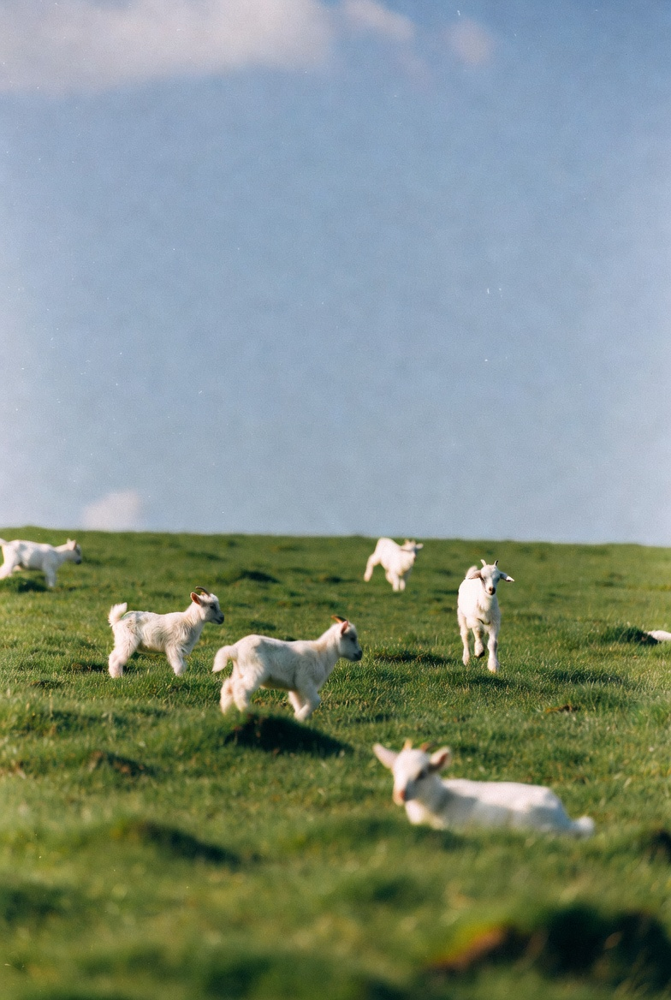

Social Acolyte
b. 2004
22. Australian. Previously, I built the datasets that determined what frontier VLA's could and couldnt do. Nowa days I work on a variety of projects that will be showcased off here.
philosophy
An acolyte studies the work before claiming to lead it. That is the frame I operate in. The strong gods I serve are not complicated: vitality, human progress, the compounding of good things over time. Doom is the path of least resistance. Please take the other one with me.
off the record
Add something real here. A thought you wouldn't put on the main page. What you're actually thinking about. What you're reading. What scares you or excites you. Surface users are the curious ones. Give them something worth finding.
selected work
-
2026
surface a browser extension that takes your agent with you everywhere, optimising the entire internet. no API necessary. the real version: your memory doc travels with you. every page you visit, surface reads it alongside the page and surfaces what matters. it doesn't ask you to configure anything. it just knows.
-
2025
curated ML data large-scale dataset work with motion capture rigs in SF.
-
2025-6
agent infra work in memory and identity, specifically around .
-
2024
mindcraft agent embodied AI agent deployed inside a videogame world, built on the mindcraft library.
-
2024
data-layer thesis why the next frontier is decided by data, not compute. (pdf)
lately
- add something here edit me
- and here
- or a link to something reading
contact
seed round — open for allocation ↗now
A browser extension that highlights what's relevant to you on any page — shopping, articles, research. Powered by your Claude account and a short memory document you write once.
early build — install ↗The new M4 Pro offers strong single-core performance and up to 24 hours of battery in daily use. The fan stays silent under moderate load. Key travel is shallow at 1.0 mm — a divisive choice. Build quality is excellent across the chassis.
↑ surface read a review. your memory doc shaped what it surfaced.

you found it.
"The human mind does not work that way. It operates by association. With one item in its grasp, it snaps instantly to the next that is suggested by the association of thoughts, in accordance with some intricate web of trails carried by the cells of the brain."— Vannevar Bush, As We May Think, The Atlantic, 1945 ↗
Bush described the memex in 1945. Surface is the memex. You're using it right now.